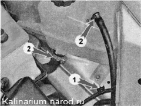
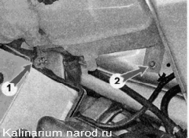
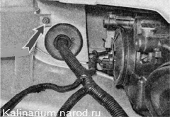
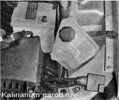

Расширительный бачок - снятие и установкаСнятие 1. Частично сливаем охлаждающую жидкость. 2. Отсоединяем клемму от отрицательного, а затем от положительного вывода аккумуляторной батареи и отводим жгут проводов вперед. 3. Отсоединяем держатель жгута проводов 1 от кузова. Торцовым ключом на 8 мм ослабляем два хомута 2 и отсоединяем два шланга от патрубков расширительного бачка. 
4. Торцовым ключом на 10 мм отворачиваем гайку 1 заднего крепления расширительного бачка, а ключом на 8 мм отворачиваем болт 2 нижнего крепления бачка. 
5. Ключом на 10 мм отворачиваем гайку переднего крепления бачка. 
6. Извлекаем расширительный бачок и снимаем его. 
Установка 1. Устанавливаем бачок в обратной последовательности. 2. Через расширительный бачок заполняем систему охлаждения двигателя жидкостью, после чего убеждаемся в отсутствии подтекания жидкости в местах соединений. При необходимости подтягиваем хомуты крепления шлангов. 3. Запускаем двигатель и даем ему поработать несколько минут с частотой вращения коленчатого вала 2000—3000 об/мин для удаления воздуха из системы охлаждения. 4. Выключаем двигатель и проверяем уровень охлаждающей жидкости в расширительном бачке. При необходимости доводим уровень жидкости в бачок до нормы. Термостат разборный — части корпуса термостата соединены болтами, поэтому при необходимости можно заменить только исполнительный механизм термостата (термоэлемент в сборе с клапанами). |